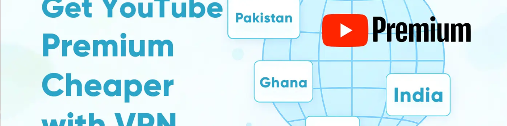
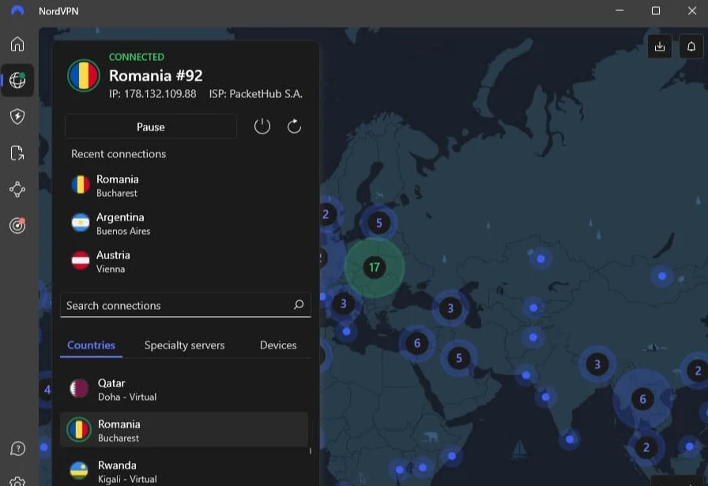
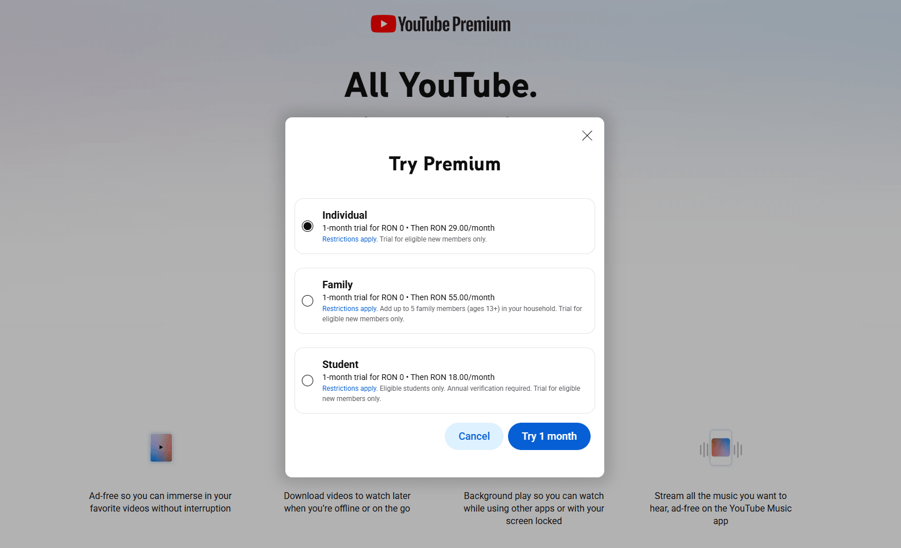
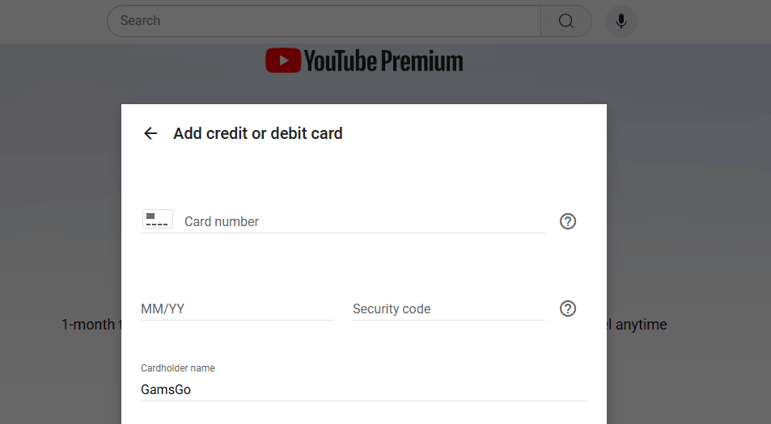
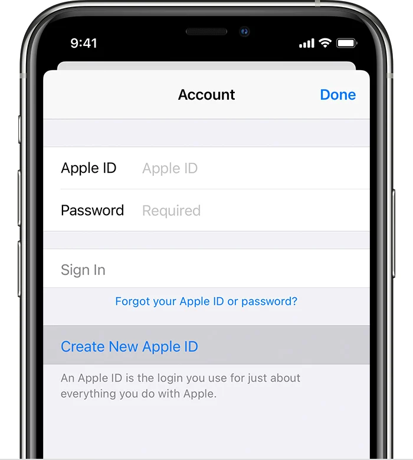

如何使用 VPN 以更低的价格订阅 YouTube Premium (2025)
打开YouTube看视频已经成为很多人的日常习惯，据Statista预测，2025年该平台在美国月活跃用户数将达到2.53亿，平均每人每月观看时长约为 **26.2小时**，渗透率超过 **81.5%**。
然而，如此高使用率的背后，是同样高昂的订阅费用： YouTube Premium在美国的个人套餐每月高达 13.99 美元。相比之下，同样的服务在土耳其只需 2.40 美元左右，在印度也只需 1.79 美元，价格相差 6-7 倍。😭
为了节省成本，越来越多的用户选择使用 VPN 进行跨区域订阅。本文将详细介绍跨区域订阅的步骤、最便宜的国家/地区以及最佳 VPN 选项。
此外，我们还将提供两种**替代解决方案**——iOS 帐户地区切换和 奈飞小铺 平台共享——帮助你以更低的价格享受 YouTube Premium。
VPN 如何让 YouTube Premium 更便宜
VPN 可以模拟低成本国家或地区的网络环境。当你连接到土耳其或印度的 VPN 服务器时，YouTube 的系统会将你的 IP 地址检测为本地地址，并向你显示相应的本地订阅价格。
在过去，这是最常见、最有效的方法。但现在，YouTube 收紧了政策，增加了新的"区域限制"条款，将于
更新后的条款要求 YouTube Premium 必须主要在帐户最初注册的国家/地区访问。使用 VPN 从其他地区订阅可能会违反规定，并导致服务被暂停或取消。
YouTube 还增加了其他几项限制：
- 订阅费用必须通过当地支付渠道支付。
- 如果检测到可疑的VPN，则无法访问支付页面。
- 家庭计划验证变得更加严格，要求成员证明他们住在同一地址。
现在使用VPN跨地区订阅不仅变得复杂且容易失败，而且还存在帐户随时
在此背景下，奈非小铺 共享平台迅速成为更安全的选择。通过其合规的共享机制，用户每月仅需 16.6元/月 （两年期付）即可享受Premium的所有权益。
YouTube Premium VPN 技巧在 2025 年仍然有效吗？
答案是：这变得越来越困难，几乎不再可行。在过去两年里，YouTube 加强了对 VPN 订阅的审查，并定期清理违反其政策的账户。
原因显而易见：多年来，大量用户通过VPN订阅价格较低的地区，这稀释了高成本市场的收入。为了弥补这些价格漏洞并保护利润，YouTube 一直在逐步加强限制，这引发了用户的不满，尤其是在2023年12月大幅涨价之后。
经过几轮系统更新，YouTube 的检测功能已经非常先进。现在它不仅会检查
虽然现在使用VPN订阅服务几乎不可能，但我们仍然概述了完整的步骤以供参考，并介绍了两种替代方案。其中，通过
如何使用 VPN 更便宜地获取 YouTube Premium
首先准备好VPN工具和外币信用卡，然后按照以下步骤操作。这里以罗马尼亚地区为例。
1️⃣
建议使用新账户，以免主 Google 账户因绕过限制而被封禁。注册时请勿绑定手机号码。
2️⃣
在整个支付过程中保持VPN连接，避免频繁切换服务器，以免触发风险控制。
3️⃣
确保显示的货币是罗马尼亚列伊 (RON)，例如，家庭计划显示"RON 29.00/月"。
如果
4️⃣
根据需要选择个人方案或家庭方案。请注意，如果你选择家庭方案，所有受邀成员的 Google 帐户区域也必须设置为同一国家/地区(罗马尼亚)。
5️⃣
地址不需要非常精确。一个简单的方法是在谷歌地图上搜索当地的酒店或公共设施，并将其所在城市、邮政编码和其他详细信息填写到表格中。
6️⃣
输入你的信用卡信息。根据我们的测试，大多数 Visa、MasterCard 或 Amex 卡均可使用。
如果付款失败(尤其是出现
7️⃣
付款成功后，页面将显示"高级"标志。断开 VPN 连接并刷新页面，确认订阅仍然有效。从此以后，你无需再保持 VPN 连接即可进行日常使用。
YouTube Premium 最便宜的国家
目前，
相比之下，
下表列出了不同国家/地区的 YouTube Premium 费用，以及与美国的价格差异。你还可以查看 YouTube 官方的"接受的付款方式"页面，了解具体的付款方式。
| 国家 | 个人计划(月度) | 折扣与美国 | 付款条件(根据经验) |
|---|---|---|---|
| 4.99 美元 | 64.30% | 可以通过 奈飞小铺 直接使用支付宝付款 | |
| 0.90 美元 | 93.60% | 需要本地支付卡(iOS 方式有效) | |
| 1.79 美元 | 87.20% | 支持境外卡支付 | |
| 1.44 美元 | 89.70% | 支持境外卡支付 | |
| 1.72 美元 | 87.70% | 支持境外卡支付 | |
| 1.85 美元 | 86.80% | 支持外国卡支付(可使用Paysafecard) | |
| 2.50 美元 | 82.10% | 需要本地支付卡 | |
| 2.86 美元 | 79.60% | 需要本地支付卡 | |
| 4.50 美元 | 67.80% | 需要本地支付卡(iOS 方式有效) | |
| 4.50 美元 | 67.80% | 部分有效(Revolut/Visa) | |
| 4.77 美元 | 65.90% | 部分有效 | |
| 5.13 美元 | 63.30% | 需要本地支付卡 | |
| 7.93 美元 | 43.30% | 需要本地支付卡 | |
| 8.60 美元 | 38.50% | 需要本地支付卡 |
最适合廉价 YouTube Premium 订阅的 VPN
根据我们对多个低成本地区的VPN(包括 NordVPN、Surfshark、ExpressVPN 等主流服务)的广泛测试
在巴基斯坦和罗马尼亚等低成本地区，NordVPN 成功绕过了 YouTube 的地理检测，提供了快速的连接速度，几乎没有断线。
因此，从稳定性、成功率、性价比等方面考虑，NordVPN是最佳选择。购买 NordVPN账户 每月仅需约3.89美元(增强版套餐)。
无需 VPN 即可节省 YouTube Premium 费用的其他方法
更改 iOS 地区以获得更便宜的 YouTube Premium
对于不想使用 VPN 的用户，你可以通过更改 iOS 账户地区来订阅。在为目标国家/地区创建新的 Apple ID 后，你可以按当地价格在
1️⃣ 购买目标地区的 App Store 礼品卡，金额可支付几个月的订阅费用。
2️⃣ 前往 Apple ID 网站，为目标国家/地区创建一个新的 Apple ID，并输入当地地址详细信息。
3️⃣ 在 iPhone 或 iPad 上，使用新的 Apple ID 登录。打开 App Store，进入账户页面，选择
4️⃣ 删除现有的 YouTube 应用，然后从 App Store 重新安装。这可确保应用获取正确的地区设置。
5️⃣ 打开 YouTube 应用，进入高级订阅页面。此时，目标国家/地区的货币和价格应该会出现。选择你想要的套餐并完成订阅。
通过 奈飞小铺 获得便宜的 YouTube Premium
奈飞小铺 是一个知名的共享订阅平台。通过分摊费用，用户可以以官方价格的一小部分享受 YouTube、Netflix、Spotify 和 Disney 等付费服务。
1️⃣ 进入奈飞小铺网站，点击右上角的
2️⃣ 登录后，在首页找到
3️⃣ 选择符合你需求的

4️⃣ 选择你的计划后，单击
5️⃣ 付款成功后，奈飞小铺 将立即处理你的订单。根据你选择的订阅类型，你的帐户将直接充值，或你将被邀请加入家庭群组。
比较三种更便宜的 YouTube Premium 付费方式
至此，我们已经介绍了 VPN 跨区域订阅以及两种替代方法。最后，我们将比较它们的优缺点，以帮助你做出最佳选择。
| 方法 | 额外费用 | 优点 | 缺点 | 推荐 |
|---|---|---|---|---|
| VPN订阅费 | 价格低廉，灵活性高 | 设置复杂，有被禁的风险 | ⭐⭐ | |
| 礼品卡加价出售 | 设置相对容易 | 仅限于 Apple 设备 | ⭐⭐⭐ | |
| 没有任何 | 极其便捷、安全、稳定 | 高峰时段可能需要等待 | ⭐⭐⭐⭐⭐ |
可以看出，跨地域VPN虽然价格最低，但是步骤复杂，失败率较高。
iOS 的更改地区方法操作更简单，但仅适用于苹果设备，而且低价地区礼品卡通常会加价出售。如果 YouTube 取消了你的订阅，礼品卡上的任何剩余金额都无法退还，这意味着直接损失。
更重要的是，这两种方法都违反了 YouTube 的规则，并且存在帐户被暂停的持续风险。
相比之下，奈飞小铺 虽然由于人气旺盛，在高峰期偶尔会出现排队或库存不足的情况，但整体体验要稳定得多。根据用户反馈，即使出现账户问题，奈飞小铺 的客服也会立即响应，并提供新的稳定账户。
结论
随着YouTube订阅政策的不断收紧，通过VPN跨区域订阅YouTube Premium的方式也面临越来越多的限制，成功率也不断下降。对于用户来说，价格居高不下，订阅流程也变得越来越繁琐。
现在，奈飞小铺 为你提供长期稳定的替代方案。借助 奈飞小铺 的智能共享系统和可靠的客户支持，你可以避免繁琐的步骤和失败风险，同时以更低的成本享受完整的 Premium 体验——无广告播放、后台运行和离线下载。
常问问题
使用 VPN 订阅 YouTube Premium 合法吗？
是的。使用 VPN 并不违法，但这可能违反 YouTube 的服务条款，导致你的订阅被取消。这是一个平台政策问题，而非法律风险。
使用 VPN 购买 YouTube Premium 会导致被禁吗？
存在风险。随着 YouTube 加强跨区域订阅限制，通过 VPN 购买 Premium 服务的帐户可能会被标记并终止。为了减少影响，最好为此创建一个单独的 Google 帐户，以免你的主帐户受到影响。
YouTube Premium 在土耳其的价格是多少？
在土耳其，YouTube Premium 个人套餐每月费用为 79.99 土耳其里拉(约合